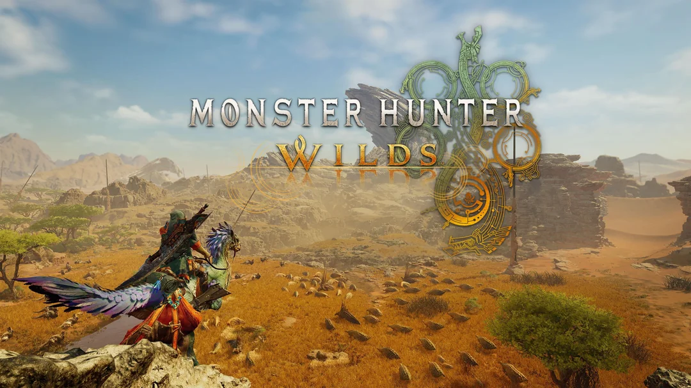

기본 운영방법
몬스터 헌터는 매우 불친절한 게임입니다. 시리즈를 거듭해 가며 편의성과 같은 부분은 계속해서 개선되어 가지만 그럼에도 불구하고,
처음 접하는 플레이어에게는 게임의 규칙이나 전투 방식, 아이템 활용법 등 많은 부분이 명확하게 설명되지 않습니다.
퀘스트의 목적만 제시된 채 플레이어 스스로가 사냥의 흐름, 몬스터의 행동 패턴, 그리고 다양한 무기와 장비의 특성을 직접 경험하며 익혀야 하는 구조입니다.
이 때문에 초보 헌터들은 첫 사냥에서 당황하거나 반복해서 실패를 경험하기 쉽지만,
이런 과정을 통해 차츰 사냥의 깊이와 재미를 알아가게 됩니다.
즉, 몬스터 헌터는 반복과 시행착오, 그리고 이를 통한 성장을 핵심 재미로 삼고 있는 게임입니다.
따라서 본 가이드에서는 처음 몬스터 헌터를 접하는 분들이 좀 더 수월하게 적응할 수 있도록,
게임의 기본적인 운영방법과 사냥의 흐름, 그리고 주의해야 할 점들을 단계별로 소개합니다.
이 내용을 참고해 보다 효율적으로 헌터 생활을 시작해 보시길 바랍니다.
구르기
몬스터 헌터라는 게임의 가장 핵심적이고 기본적인 시스템입니다.
기본적으로 매우 긴 무기의 후딜을 취소하는 동시에 몬스터의 패턴 범위에서 벗어나거나 포지셔닝을 하는 플레이를 가능하게 합니다.
다른 소울 라이크 게임들과는 다르게 회피주(장신구) 없이는 무적 시간이 매우 짧아 패턴에 맞게 구르기 보다는 몬스터의 움직임을 보고 미리 범위에서 벗어나는 운영을 해야합니다.
긴급 회피
납도시 몬스터의 반대 방향으로 달리며 점프시 가능한 동작입니다.
점프를 뛰는 순간부터 다시 일어날 때까지 통으로 무적이므로 큰 패턴이 온다 싶을때 납도하고 긴급회피를 하시면 됩니다.
예리도
예리도 시스템입니다.
원거리 무기를 제외한 모든 무기에 존재하는 시스템으로,
예리도가 낮아질 수록 데미지의 배율이 낮아지고, 단단한 육질에 제대로 데미지가 들어가지 않게됩니다.
이를 방지하기 위해 아이템창의 숫돌을 사용해 꾸준히 예리도를 다시 채워줄 필요가 있습니다.
식사
몬스터 헌터 와일즈는 '휴대용 화로 식사, 마을 식사, 대집회소 식사'로 총 3종류의 식사가 존재합니다.
식사시 기본적으로 체력과 스태미나 최대치가 증가하므로 주기적으로 하시는걸 권장드립니다.
식재료나 식사를 하는 마을에 따라 받을 수 있는 버프가 다르므로 자신에게 필요한 음식을 드시면 됩니다.